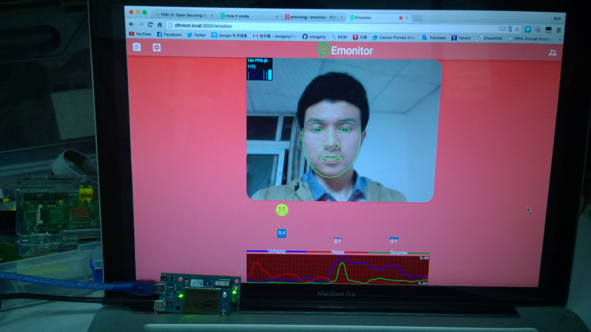

Name: Erik Xiong Company: SIMM, Chinese Academy of Sciences Role: Engineer, Data Science Graduate Student Skills & Hobbies: Data Visualization, Nodejs, Computer Vision, Raspberry Pi, Intel Edison, Arduino Email: xiongzhp@outlook.com
Name: Tony Zhong Company: SIMM, Chinese Academy of Sciences Role: Designer, Pharmaceutics Graduate Student Skills & Hobbies: Google Materia Design, SketchUp, 3D printing, Solidworks, AI, Final Cut Email: 575313339@qq.com
Instructions
1) Allow the request to use your webcam (if the request didnot pop up, close current tab, reload the page in a different tab) .
2) Click Start!
3) Our program will capture your face and rate your emotions in real-time.
4) Try to move your head when the face shape model does not fit your face well.
This is a javascript implementation of face tracking and emotion detection, we built it with nodejs, emit extreme emotions with socket.io and store realtime quantified emotion data into mongodb.
In addition, we figure out the mean of each quantified emotion(unhappy, happy, surprise) and the counts of extreme emotions in every minute, hours, or time span you set using mapreduce.
Above all, we induced a new concept, Emotion Index, to measure the level of your emotions, which is calculated in combination of the quantified mean emotions and the counts of extreme emotions.
To-Do
We made it run smoothly on Intel Edison and Raspeberry Pi, and we will get use of GPIO to make the hardware interact with you whenever extreme emotions are detected.

We also plan to make an easy access hardware, which is capable of collecting as much emotion data as possible. For one thing, with the hardware, we can easily collect emotion data from people with psychological problems every day in psychology research, so we can get better understanding of mental disorders, like autism, depression and anxiety. For another, we can apply it in shopping mall for realtime feedback of products from visitors.
What's your ideas? Contact us xiongzhp@outlook.com.